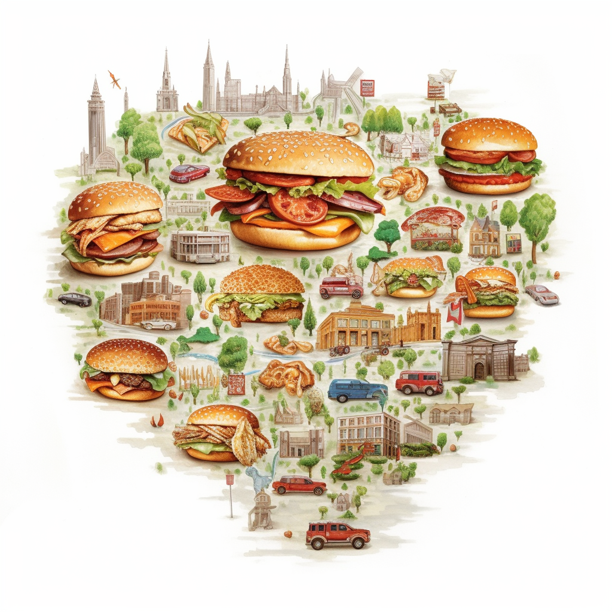

1
Gå till ett hamburgarhak
2
Beställ och käka en burgare
3 Reflektera djupt över din upplevelse
4 Dela med dig och skriv en recension! Burgarkartan visar endast hak som våra användare har besökt och recenserat

Burgarkartan är din kulinariska GPS, guidande dig rakt till stjärnorna av stans hamburgarvärld. Med vår interaktiva karta och aptitväckande recensioner, blir jakten på den perfekta burgaren mer än en måltid – det blir ett äventyr!
Vad våra användare tycker om Burgarkartan
Michael
Det bästa som har hänt sedan AI revolutionen
Linda
Att käka burgare har aldrig varit så här kul!
Rebecca
Tack vare Burgarkartan så har jag hittat de bästa burgarhaken i stan
Ellis
Jag gillar sajten, alltid kul att hitta nya ställen man inte visste fanns